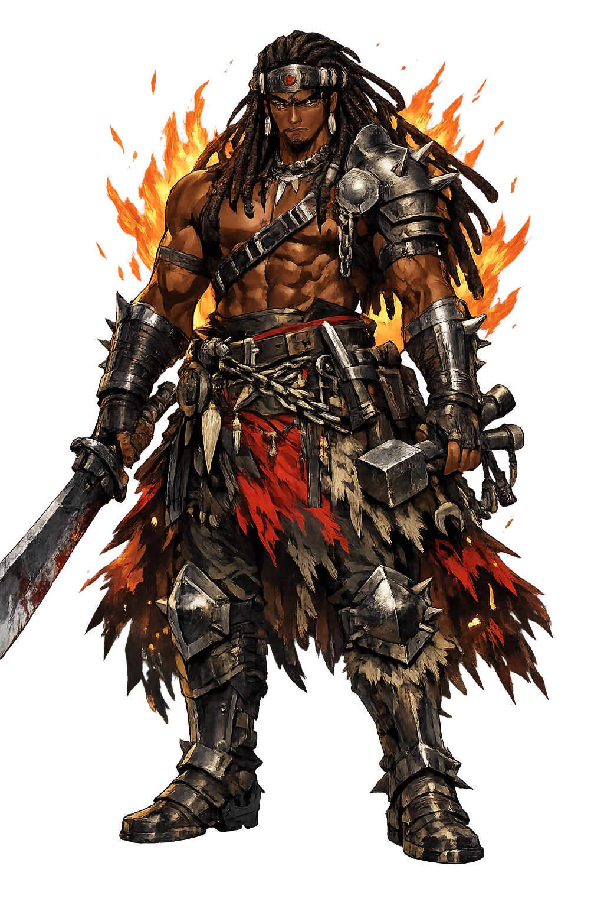
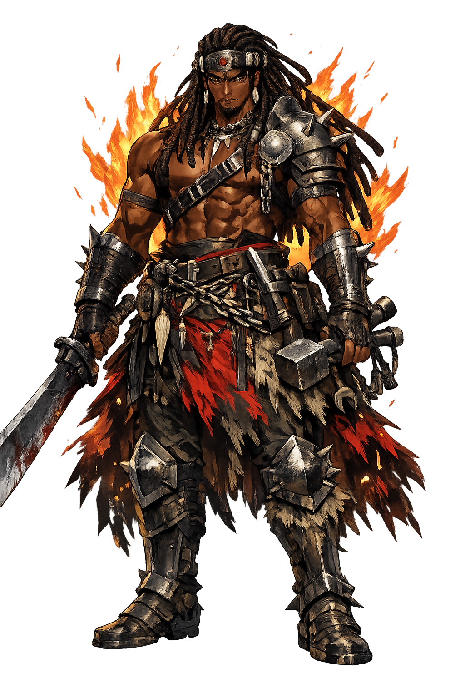

Unicode restoration and ASCII comparison
Ògún
The name survives only in scholarly transliteration. Ògún is the standard Yoruba romanisation, documented in academic sources — “God of iron”. Its acute stress marks preserve distinctions lost in plain ASCII.
No indigenous writing system is securely attested for individual yoruba names. The form shown is a modern scholarly transliteration.
ogun
Reduced to plain ogun, the name loses everything that made it specific: acute stress marks. What remains is an ASCII string that machines can parse but that no longer speaks with its original voice.
Ògún
The Unicode restoration recovers what ASCII flattened. Ògún restores acute stress marks, returning the name to its original written dignity. The domain encodes to Punycode, but the browser displays the truth.
Ògún.com → xn--gn-1ja7a.com
The non-ASCII characters in Ògún are encoded while the ASCII remains visible. To the DNS, it is Punycode. To humanity, it is Ògún.
How Ògún is preserved in writing
No indigenous writing system is securely attested for individual yoruba names. The form shown is a modern scholarly transliteration.
Contribute scholarly provenance →How Ògún was spoken
Iron, War, Labour, and the First Path through the Forest
Ògún is the orisha of iron and of every road iron opens: the hunter who cleared the primordial forest so the gods could descend, the smith who arms the farmer and the warrior alike, and the patron of every worker who makes a living by metal — from the blacksmith to the surgeon to the driver.
His tool and emblem: the blade that clears the forest path — creation by cutting.
The smith's fire: iron is his body, and every smithy his shrine.
He hacked the road through the primal forest that let the orisha reach the earth.
His companion and sacrifice — the hunter's faithful one, honoured at his festivals.
Stories of Ògún
Ògún's myths are the Yoruba meditation on power: the strength that clears the way for everyone, and the rage that, unmastered, turns on its own town.
When the orisha first sought to descend to the earth, the primordial forest stood unbroken and none could pass — not Orunmila with his wisdom, not any god with any tool. Ògún took his cutlass and cut the road through, and the gods followed him down — the mythic clearing of the way. Ritual primacy, though, belongs to another: it is Èṣù-Ẹlẹ́gbá who is propitiated first in every Yoruba rite. Creation, in Yoruba thought, required not a word but a blade.
Made king of the town of Ire, Ògún came one festival day to find the people silent — they did not greet him with the honours he was owed. In his rage he cut down his own people with the sword until his son stood in the way; coming to himself, he declared he would go no more among men, and sank into the earth — remaining, as his praise-songs say, in the iron itself. Every Ògún festival at Ire replays the king's coming and going.
Before he was king or smith, Ògún was the supreme hunter: lord of the deep forest where no farm grows, guide of the hunters' guilds whose odu-ifá praise-songs call him "the one who has water but bathes in blood." Hunters still chant his oríkì at the forest's edge: the road-opener is also the one who knows the road's dangers better than any god.
Ògún is the god of the tool in the hand. Every technology is his: the blade that clears the road and the blade that clears the town are the same iron, and only the wielder's self-command decides which road it opens. He asks the maker's question, which is also the warrior's and the surgeon's: what does your strength serve — and who stands in the way when it slips?
Enter Extended Lore